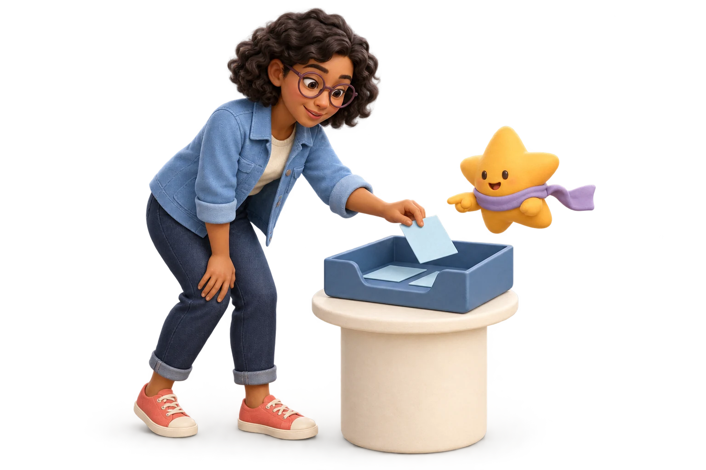

PIP SAYS“Start with what you know.”

01NOTES
Save the original words.
MAYA“People keep asking what time the workshop starts.”
Pip: Keep that note exactly as it is. You can find it again and use it to understand later ideas.
ORIGINAL NOTE
Today: save text, add tags, and search your notes.People keep asking what time the workshop starts.
Saved in its own place.